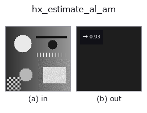

halcon_ext op• Datenarten: image → feature
• Aufruf: fullseye.apply(img, "hx_estimate_al_am", a=0.5, b=0.5) (das 2-D-Modell ist ein Bild plus zwei skalare Regler a,b∈[0,1])
• HALCON-Äquivalent: estimate_al_am (Bedeutung und Parameter sind in der HALCON-Referenz nachzulesen)

*Die Abbildung ist die tatsächliche Ausgabe auf einer synthetischen 128×128-Eingabe. Links Eingabe, rechts Ausgabe. Punktwolken als Draufsicht-Streudiagramm (Helligkeit = z), 1-D-Reihen als Linie, Volumen als Maximum-Projektion entlang z, Videos als mittleres Bild, komplexe Bilder als Betrag; Rückgabewerte, die kein Bild ergeben, werden als Werte gezeigt.*
*Regler a ändert die Ausgabe nicht (gemessen: identisch bei 0,1 / 0,5 / 0,9).*
*Regler b ändert die Ausgabe nicht (gemessen: identisch bei 0,1 / 0,5 / 0,9).*
Schätzt Albedo (Reflexionsgrad) und Umgebungslicht: Albedo ~ der Luminanzumfang; dieser Operator liefert die Albedo.
> Die ausführliche Beschreibung unten ist der Originaltext — Zusammenfassung und Überschriften sind übersetzt.
画像の最大値と最小値の差 `max(v) - min(v) を [0,1] に clip した np.float64` を返す。
「反射率(albedo)が高いほど陰影の明暗差が大きい」という関係を、輝度のダイナミックレンジで代用した推定。
ambient(環境光)は計算せず返さない。
• `a, b` は未使用。
最大・最小の 2 画素だけで決まるため、飽和画素や暗点が 1 つでもあれば 1 に張り付く。雑音に弱いので前段で
`hx_mean_shape や median_rect` を掛ける。min-max 正規化済みの画像では常に 1 になり意味を持たない。
slant の推定 `hx_estimate_sl_al_lr` は反射率 1 を仮定しており、この値で割って補正する用途が想定される。
• Leitfaden zur Familie gallery2d_halcon_ext
• Katalog der Beispieldaten (Download-URLs / Lizenzen) — 2-D nutzt skimage.data (BSD/Public Domain) plus synthetische Bilder, 3-D nennt Download-URLs echter Datenquellen (Stanford, PDS, …).
• Herkunft und Literatur der Operatoren — die Quellen der Forschung/Verfahren, auf denen diese Operatorfamilie beruht.
• Der kanonische Algorithmus (Autor, Jahr) und seine Anwendungen stehen im Familienleitfaden oben.
Das Programm unten ist nachweislich lauffähig (gleiche Eingabe wie die Abbildung). In der Studio-Hilfe wird dieser Block zu Schaltflächen, die es sofort laden und ausführen.
hx_estimate_al_am 0.50 0.50
▸ Load this pipeline · Load & run
• gallery2d_halcon_ext — py -3.11 examples/gallery2d_halcon_ext.py
feature als Eingabe)halcon_ext)hx_gen_circle · hx_gen_ellipse · hx_gen_rectangle2 · hx_gen_checker_region · hx_gen_grid_region · hx_gabor · hx_fit_surface1 · hx_fit_surface2
*Provenance: ops.py — 2D Operator-Registry. Diese Notiz wird von tools/opdocs.py md erzeugt (nicht von Hand bearbeiten).*
© 2026 Kazufumi Furuse — Fullseye operator documentation. Licensed under Apache-2.0.